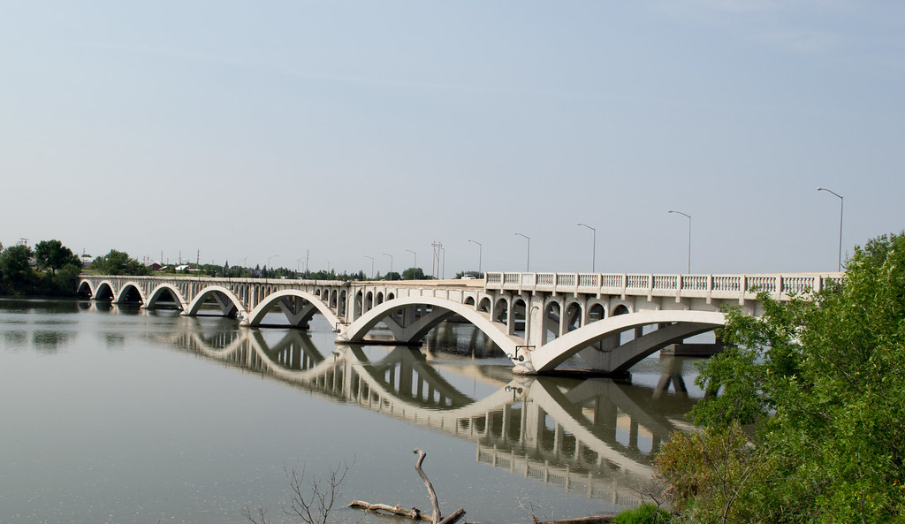

Brush Crazy
details
address
Feather Your Nest
details
address
Ford's Drive-In
details
address
Annual Easter Egg Hunt
Join us March 31st for the Great Falls Annual Easter Egg Hunt. Along with Easter Eggs filled by our Members and fun activities for the kids, this is a great opportunity to see meet local businesses and see what they have to offer